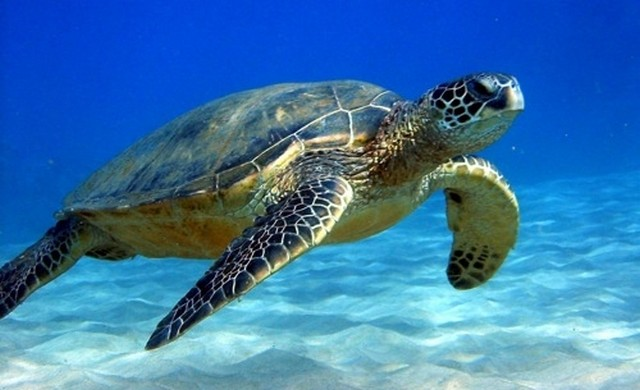

Дайвинг клуб на юго-западе Великобритании - сделай плюх с нами!
Подводные фотографии
Здесь представлены самы впечатляющие фотографии, когда-либо сделанные
членами клуба на пленочную и цифровую фотокамеру.
Если вы хотите добавить сюда свое фото
напишите мне(Боб).

Эта черепаха довольно грациозно плавала у Большого Барьерного
Рифа (Квинсленд, Австралия), несмотря на отсутствующий с
правой стороны фрагмент панциря, предположительно после атаки
акулы.[Фотограф: Йен Ллойд]